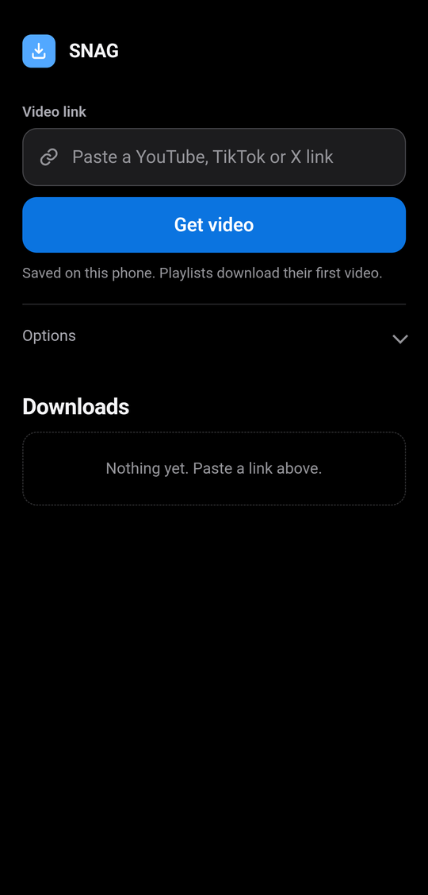
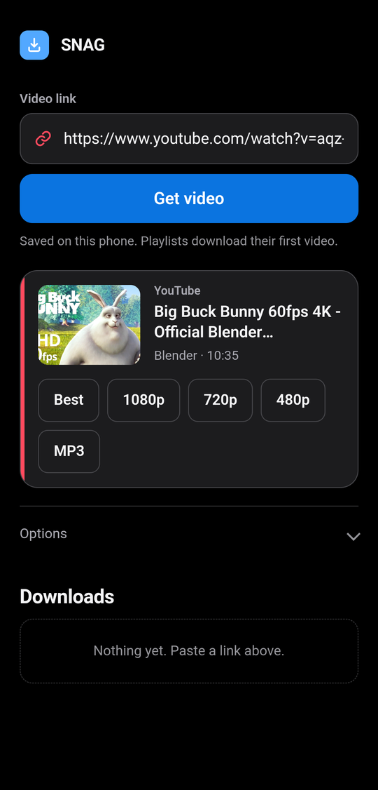
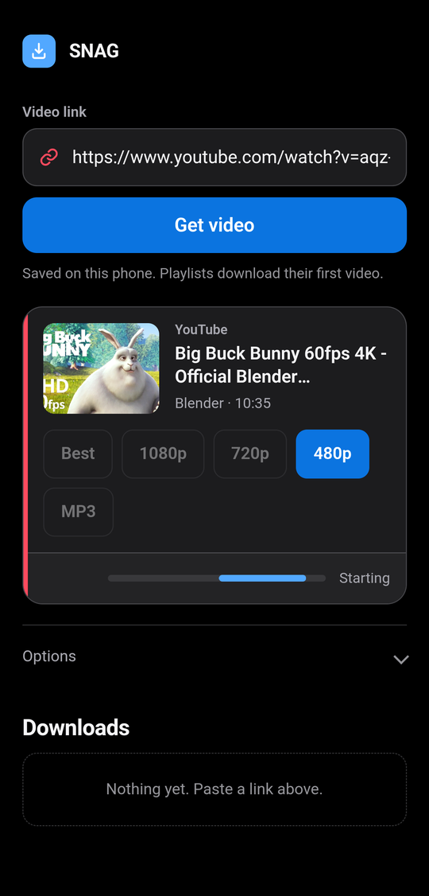
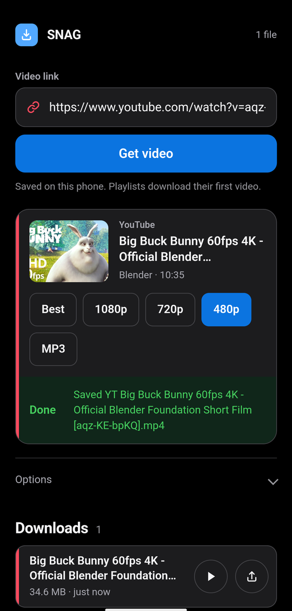

Paste. Pick. Done.
The same web UI runs on both. On Android files land in
Android/data/com.snag.app/files/SNAG/ and a share button beside each
download sends them to your gallery or any other app. On Windows they go to a
snag_downloads folder next to the exe.




Built on the real thing
#01
Real yt-dlp, bundled
SNAG ships the genuine yt-dlp, not a reimplementation, so it reaches the same sites yt-dlp does. Which ones work can change when a site updates.
#02
Real FFmpeg, on-device
HD stream merging and MP3 extraction run locally through bundled FFmpeg. Nothing is uploaded anywhere.
#03
Nothing leaves your device
No account and no server. The download happens on your own phone or PC and the file never leaves it.
#04
Share and go
On Android, share a link to SNAG straight from YouTube, TikTok or X. On Windows, a browser extension adds a SNAG button to the page you are watching.
#05
Pick your quality
Paste a link and choose the format, from full HD video down to audio-only MP3.
#06
One program, phone and PC
The same code runs in both. On Android it is an APK; on Windows a single exe with Python and FFmpeg inside it, so there is nothing to install.
Installing it
SNAG is not on Google Play, and never will be: YouTube developer policy and Play rules bar yt-dlp style apps. That is the only reason these are plain files and not store links.
Android
Download the APK
Chrome warns about APK files. Tap Download anyway. Use Chrome rather than a browser built into another app, which blocks downloads.
Allow installs
Android asks to allow installs from this source once. Allow it and continue.
Keep it on screen
Paste a link and pick a quality. Leave SNAG on screen while it downloads, because Android cuts the network to apps in the background.
Windows
Download the exe
One file. Python, yt-dlp and FFmpeg are inside it, so nothing else has to be installed and no admin rights are needed.
Run it
SmartScreen warns the first time because the exe is not signed with a paid certificate. Choose More info, then Run anyway.
Use the browser tab
It opens the same UI at localhost:8765 and sits in the system tray
while it runs. Right-click the tray icon to change the download folder or quit.
Questions
Where do my downloads go?
On Windows, a snag_downloads folder next to the exe, or wherever you
point it with Choose download folder in the tray menu. On Android,
Android/data/com.snag.app/files/SNAG/, which Android 11 and later hide from
the Files app, so use the share button beside a finished download to send it to your
gallery or any other app.
Can I get just the audio as an MP3?
Yes. Pick MP3 instead of a resolution. Both downloads carry their own copy of FFmpeg, so this works without installing anything else.
Where does SNAG go after I run it on Windows?
Into the system tray, next to the clock. The page in your browser is just its interface. Right-click the tray icon to reopen SNAG, open or change the download folder, or quit. Quitting from there is what stops it.
Why do my Android downloads stall when I switch apps?
Android cuts network access to apps in the background, which surfaces as a DNS error from yt-dlp. Keep SNAG on screen until the download finishes. It holds the screen awake to help.
A site stopped working. What now?
Sites change how they deliver video and yt-dlp is bundled in, so it cannot update itself. When something breaks it gets fixed in a later release. Report it on GitHub issues or r/SNAG_official and check you are on the newest version first.
What is the browser extension for?
It adds a SNAG button to YouTube, TikTok, X, Instagram, Vimeo, Twitch, SoundCloud and
Reddit so you can start a download without copying the link. It is in the release as
SNAG-extension-1.1.zip: unzip it somewhere permanent,
open chrome://extensions, turn on
Developer mode and choose Load unpacked. It talks only to SNAG on your own machine,
and only on those sites. It is optional; SNAG works perfectly well without it.
Does it cost anything, and are there ads?
It is free and open source under GPL-3.0, with no account and no subscription. The Android app shows one small banner ad. The Windows build has no ads at all.
Windows says the file is unsafe. Is it?
SmartScreen warns about any program not signed with a paid certificate, and some antivirus engines flag the kind of bundle the exe is built with. Compare the SHA-256 against the one published here: if it matches, you have the file that was built from this source.
Why is it not on Google Play or the Microsoft Store?
YouTube's developer policy forbids apps that download videos for offline playback, and Play separately bars apps that induce copyright infringement. Every yt-dlp based app is distributed outside the stores for the same reason.
Check it is the real build
If you want to confirm a download is genuine, check its hash against the one below. For the APK you can also check the certificate it was signed with; every release since the first has used the same key.
$ sha256sum SNAG-1.5-arm64-v8a.apk 4d1e712e332050bfdf84b2f0da3ac9e446d4c751bf23c08d929a7b59952810f5 $ apksigner verify --print-certs SNAG-1.5-arm64-v8a.apk Signer #1 certificate SHA-256: 2039afdc2d7f034f90e948aa76bd50988dccd618cf31d1200692961c82258d11 $ sha256sum SNAG-1.5-windows-x64.exe a832b67d1e329a0de0cecac571742e915e114f7514679cd4b72c9c5b39e26607 $ sha256sum SNAG-extension-1.1.zip 95bbefec4db4f8590d3fed6219edc5f6cb5ec13a0f89f868392a5af39108d61c
Android 7.0 (API 24) or later, arm64-v8a only: that is essentially every phone sold in the last decade, but not 32-bit devices, emulators or ChromeOS. Windows 10 or 11, 64-bit. Windows 8.1 works; Windows 7 does not, because Python dropped it.